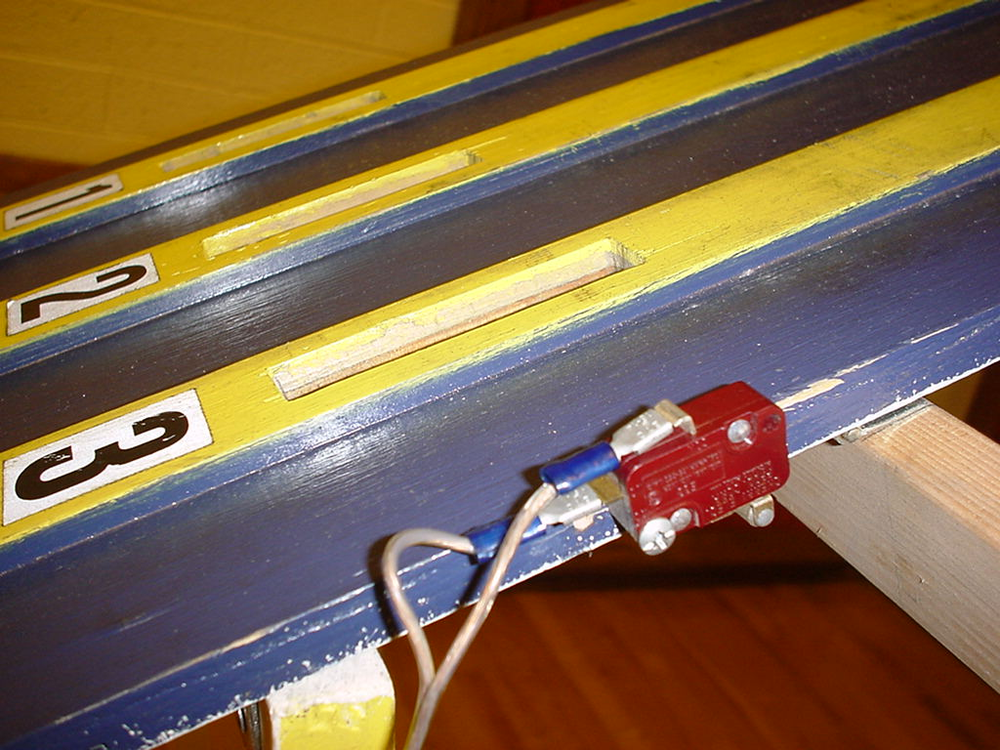
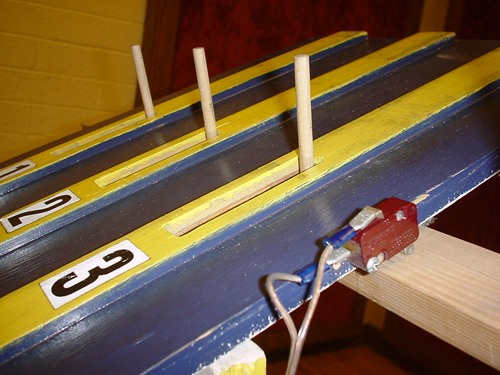

The first picture shows the gate in the 'open' position (as though a
race had started). You can see the start switch in the foreground.

In this second picture, you see the gate in the 'ready' position with
the gate up or closed and the switch engaged.

I use the screw, at the bottom left of the switch in the picture, to tighten up the switch against the side of the track. I only put one screw in it to allow easy adjustment of the switch against the start gate.
Back to the main Pinewood Timer page